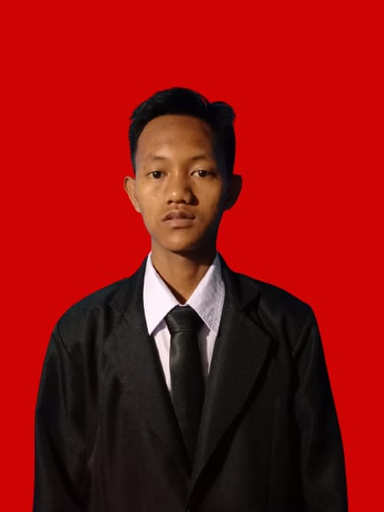

Tentang Saya
Halo! Saya Yudi Awaludin, mahasiswa Teknik Informatika di STT Pratama Adi yang memiliki ketertarikan pada dunia teknologi, khususnya pengembangan perangkat lunak dan website.
Saya pernah mendapatkan pengalaman sebagai Front-End Developer melalui program magang di PT Hooki.id Software House, Bandung. Dari pengalaman tersebut, saya belajar mengenai pengembangan website, pembuatan desain antarmuka menggunakan Figma, serta melakukan debugging untuk memastikan website berjalan dengan baik.
- FokusPengembangan front-end dan desain antarmuka
- Berdomisili diKab. Bandung, Indonesia
- KetersediaanTerbuka untuk proyek freelance